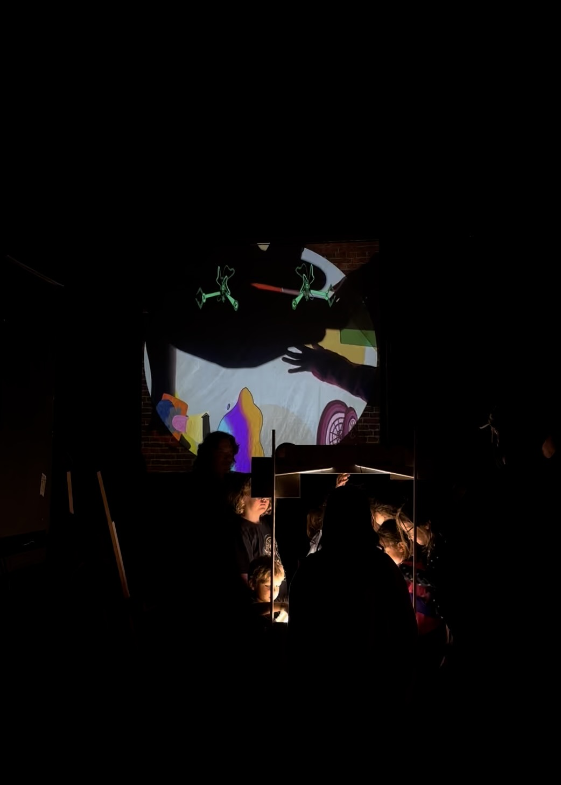
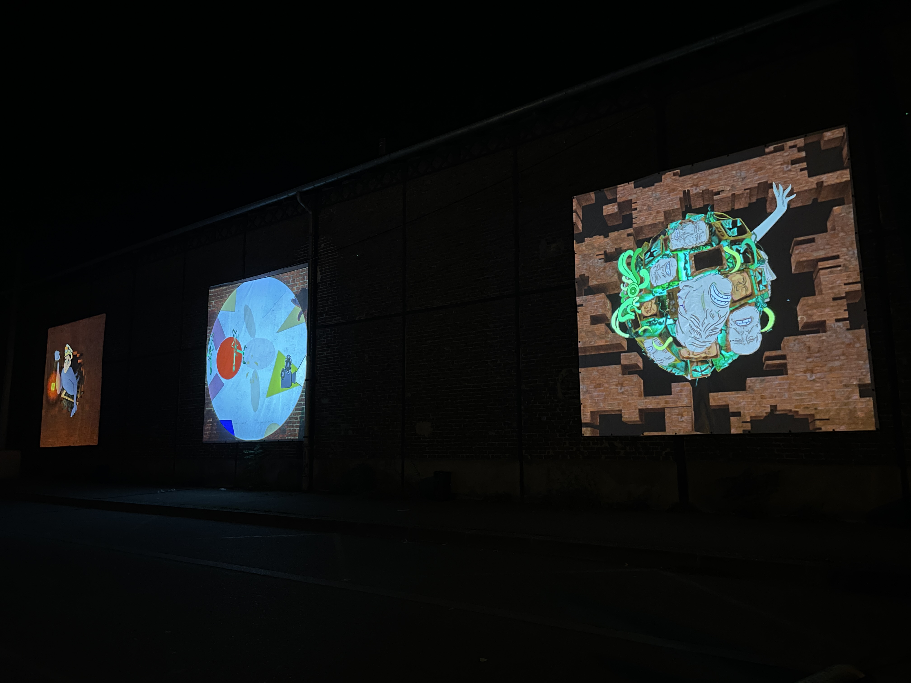
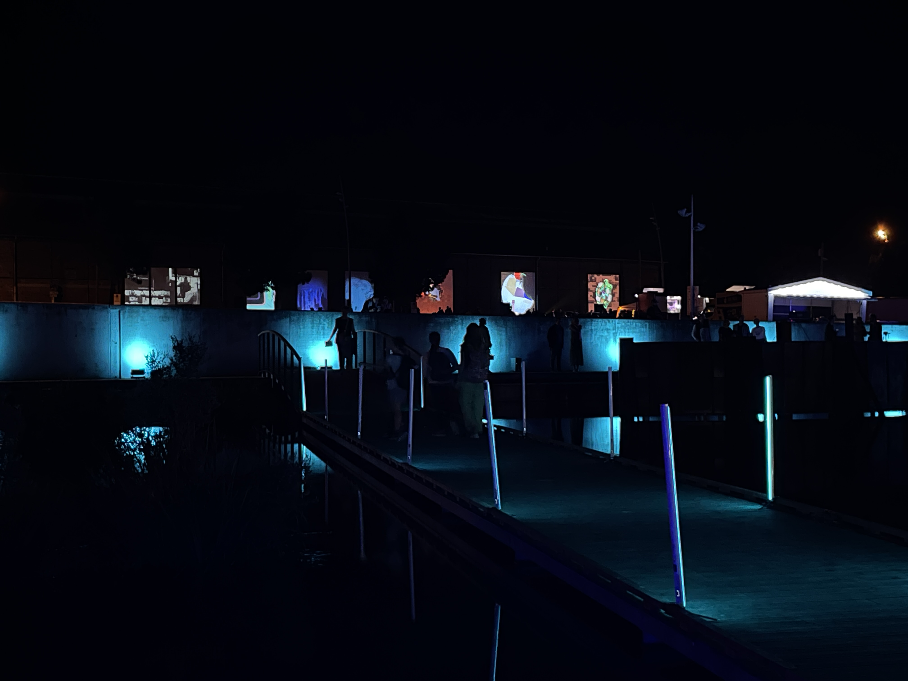
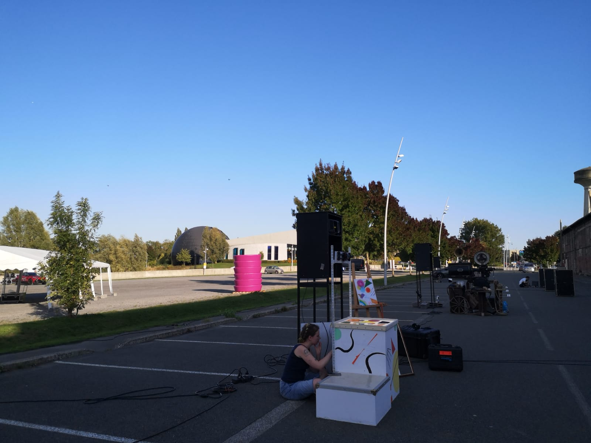

Location : Arras, Northern france
Date : September 2025
Returning artists at Les Nuits de Bassin
'Immerse yourself in a giant game where you become the main actor! From miner's lamps
to projector lamps This project pays tribute to the industrial past of the hangar,
from the manufacture of miners' lamps to the cinema (Germinal), to the new image
technologies at the Nuits des Bassins. Light becomes the common thread, linking
workers' history and digital art through video projections and immersive scenography.
Music: Jean-Baptiste Philippot with the students of the Conservatoire at Arras
Departmental Outreach'




Creative Computing Institute Summer Festival
Date : June 2024
Participated in the Creative Computing Institute (UAL) Summer Festival during my Creative Computing diploma
Displayed our group work 'Cocky Objects'. A collection of fabricated artifacts exploring how labelling within
machine learning creates + preserves societal biases through computation. Using cockney rhyming slang as a
satirical tool to purposely mislabel within machine learning models.
Les Nuits de Bassin: Projection mapping festival
Location : Arras, Northern France
Date: September 2023
Participating artist at Les Nuits de Bassin, a projection mapping festival in France.
Displayed our work 'Mesocosm', co-animator + sound designer along with Ellen Stoki and Yagmur Karaman
Created using Maya and Garageband